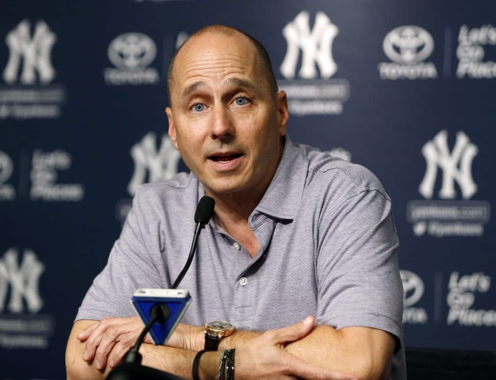
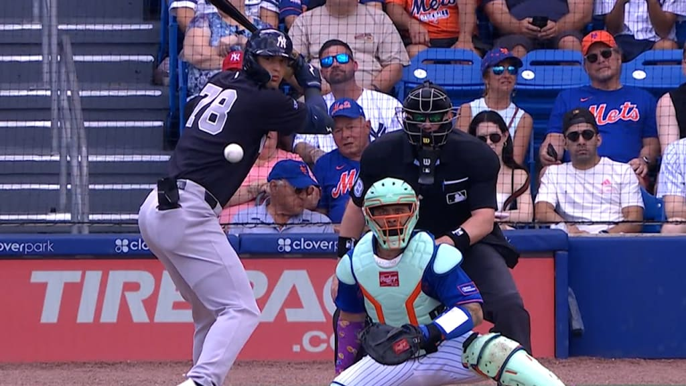

All Rise: Aaron Judge celebra el nuevo sistema de retos de MLB
Por Carlos Developer | 20 de febrero de 2026
En los entrenamientos de primavera en Tampa, Aaron Judge ya está sacando provecho de la nueva arma tecnológica de la MLB: el sistema automático de bolas y strikes (ABS). Durante una práctica de bateo reciente, el capitán de los Yankees no dudó en tocarse el casco para pedir un reto tras un ponche cantado; segundos después, la pantalla confirmó que la bola estaba fuera de la zona.
"Estoy emocionado por esto. Si siento que puedo pegarle, siento que es un strike. Poder corregir esas llamadas bajas nos ayudará a ganar más juegos." — Aaron Judge.
Históricamente, la estatura de 2.01 metros (6'7") de Judge ha sido un problema para los umpires. Desde 2017, ningún jugador ha sufrido más strikes cantados erróneamente en lanzamientos bajos que él (368 llamadas incorrectas). Este sistema promete nivelar el campo de juego para el capitán.
El mánager Aaron Boone está animando a todo el equipo, incluidos los lanzadores como Gerrit Cole y Carlos Rodón, a ser agresivos con los dos retos que tendrán por juego. Con este cambio, la Avenida de los Yankees espera que esos "strikes" injustos se conviertan en bases por bolas o, mejor aún, en cuadrangulares.
97 MPH: Gerrit Cole enciende las alarmas de optimismo en el Bronx
Por Carlos Villanueva Ramos | 01 de Marzo, 2026

Brian Cashman confirma: "Este equipo es fuerte y capaz de grandes cosas".
TAMPA, FL - El campamento de los Yankees tiene un número mágico: 97 millas por hora. Ese es el registro que Gerrit Cole ha alcanzado en sus lanzamientos en vivo, a menos de un año de su cirugía Tommy John. El optimismo de Brian Cashman no es solo una sensación, es una realidad respaldada por datos.
"Si este es el ambiente en marzo, imaginen el ruido en octubre", comenta Carlos Villanueva en el estreno de su podcast.
El Futuro del Montículo: Lagrange y Rodríguez
La juventud está pidiendo paso a gritos. Carlos Lagrange (N° 79 en MLB Pipeline) dejó a todos boquiabiertos al registrar 102 mph, la velocidad más rápida vista esta primavera. Por su parte, Elmer Rodríguez (N° 82) demostró una madurez de veterano con un sinker de 94.9 mph que provocó una doble matanza clave.
Escucha el Podcast: Análisis del Spring Training
Con la llegada de Randal Grichuk y el posible regreso de Cole para mayo o junio, la profundidad del roster es tal que prospectos como Jasson Domínguez y Spencer Jones podrían iniciar en Triple A. Como dice Cashman, "es un buen problema que tener".

"Spencer Jones enviado a Triple-A por los Yankees"
TAMPA, FL - Spencer Jones enviado a Triple-A por los Yankees
"Esperemos ver pronto a Jones en el primer equipo de los Yankess junto Jasson Domínguez y que demuestre porque debe estar jugando como titular en los Yankees", comenta Carlos Villanueva.
Decisión Estratégica: El Futuro de Jones
Spencer Jones enviado a Triple-A por los Yankees